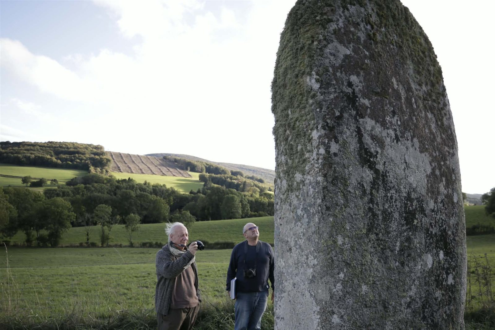
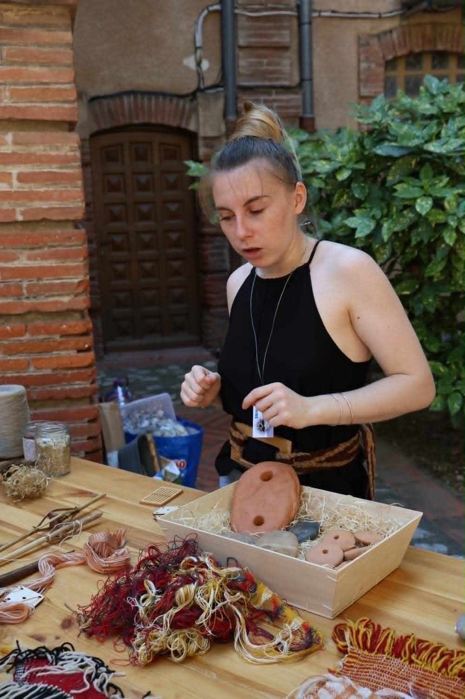
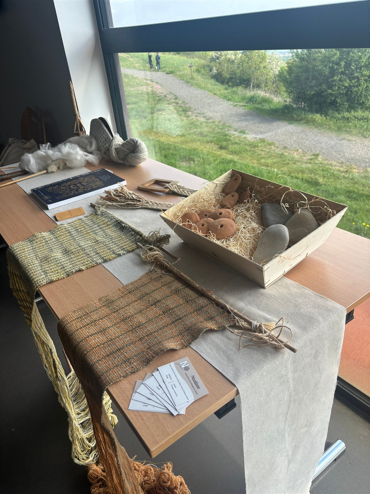
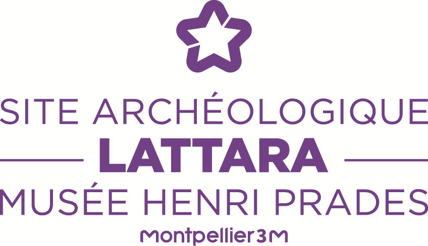
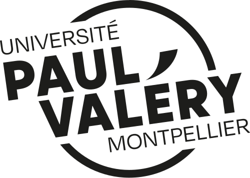

Une histoire
à tisser ensemble.
Faire dialoguer recherche, matière et transmission pour découvrir les techniques textiles anciennes.
Découvrir
Le textile raconte
notre histoire.
Du Néolithique au Moyen Âge, les textiles témoignent de techniques, d’usages et de savoir-faire que Néotisse invite à découvrir. L’association met en relation les connaissances archéologiques, l’observation des matières et la pratique des gestes.
Filage, tissage sur métier vertical, tissage aux tablettes et teinture naturelle deviennent des points de départ pour comprendre la fabrication d’une étoffe. Les démonstrations et les ateliers donnent à chacun des repères concrets, sans nécessiter de connaissances préalables.
Rencontrer NéotisseNotre histoire
La matière, la transmission et la rigueur scientifique.
Fondée en mai 2024 et basée à Montpellier, Néotisse est une association loi 1901 consacrée à la médiation scientifique autour des textiles anciens. Son projet réunit recherche archéologique, maîtrise des techniques et transmission auprès des publics.
Co-créée par Marie-Salomé et Émilie, l’association croise leurs spécialités pour aborder le textile à travers les sources écrites, les outils et les procédés de fabrication. Une équipe bénévole accompagne également le projet associatif.

Marie-Salomé
Diplômée d’un master en égyptologie
À travers les sources écrites de l’Égypte ancienne, Marie-Salomé explore le vocabulaire des tisserands et de leur métier. Cette approche lui permet d’éclairer la place du textile dans les sociétés anciennes et de relier les mots aux pratiques artisanales.

Émilie Roma
Doctorante en archéologie, spécialiste des systèmes de tissage
Émilie s’intéresse aux procédés de fabrication des textiles anciens, et plus particulièrement aux systèmes de tissage. Son travail met en lumière les gestes et les choix techniques à l’origine des étoffes, des connaissances qu’elle partage pour rendre ces savoir-faire accessibles.
Des savoir-faire à transmettre

La mission de Neotisse
Transmettre
Partager les savoir-faire et rendre les connaissances accessibles par une médiation attentive aux publics.
Explorer
Observer les fibres, les couleurs et les procédés pour découvrir la richesse du patrimoine textile.
Comprendre
Relier la pratique aux questions historiques et scientifiques, en distinguant les connaissances établies, les hypothèses et les résultats des essais. Le geste aide à formuler des questions ; il ne remplace pas l’étude des sources.
Une approche scientifique et pédagogique
Observer les matières
Partir d’éléments concrets pour susciter les questions et relier les savoirs à une expérience sensible.
Expérimenter les gestes
Mettre à l’essai un procédé de filage, de tissage ou de teinture pour en observer les contraintes et les résultats. L’archéologie expérimentale permet de confronter des hypothèses techniques à la pratique, tout en expliquant les limites de l’interprétation.
Partager avec rigueur
Expliquer les connaissances et leurs limites dans un langage accessible, en donnant une place aux échanges.
Comment se déroule une rencontre ?
Chaque intervention se construit en fonction du lieu, des objectifs et du public. Elle peut associer une présentation historique, une démonstration et, selon le projet, un temps de pratique.

Replacer les techniques dans leur histoire
Une introduction donne les repères historiques et archéologiques nécessaires pour comprendre les matières, les outils et les usages présentés.
Observer les outils et les gestes
La démonstration rend les procédés de fabrication visibles. Elle ouvre un temps d’échange sur les fibres, les étapes du travail et les choix techniques.
Expérimenter si le format le permet
Un atelier participatif peut compléter la rencontre à la demande de la structure. Son contenu est adapté au public et aux conditions d’accueil.
Des savoirs à partager avec tous
Institutions et structures d’accueil
Musées, collectivités, établissements scolaires, universités, associations et organisateurs d’événements peuvent solliciter Néotisse pour une intervention culturelle, pédagogique ou scientifique.
Le projet se prépare ensemble : objectifs, public, lieu et format permettent de définir une proposition adaptée. L’association apporte aussi une expertise technique aux projets d’archéologie expérimentale.
Préparer un projet ensembleGrand public et familles
Les personnes curieuses d’histoire, d’archéologie ou de savoir-faire textiles peuvent découvrir les techniques lors des rencontres ouvertes au public.
L’agenda rassemble les informations utiles pour choisir un rendez-vous : dates, lieux, publics concernés et conditions de participation lorsqu’ils sont confirmés.
Consulter les rendez-vousNos partenaires
Des liens entre culture, patrimoine, recherche et transmission pour faire découvrir les textiles anciens.
Musée de Tautavel
Musée de Gergovie

Musée Henri Prades — Site archéologique Lattara

Université Paul-Valéry Montpellier 3
CERAC
Festival du lin et de la fibre artistique
Lozère Tourisme
Faites défiler pour découvrir nos partenaires
Les regards de nos publics
Une rencontre ou un atelier à partager ? Retrouvez le livre d’or et laissez votre témoignage.
Consulter le livre d’orLes engagements de l’association Neotisse
- Accessibilité : expliquer les techniques dans un langage compréhensible.
- Transmission : donner à observer les matières, les outils et les gestes.
- Rigueur : distinguer les connaissances, les hypothèses et les résultats d’essais.
- Dialogue : construire les interventions avec les structures d’accueil.
Ces principes prennent forme dans les actions de médiation culturelle et les ateliers textiles. Pour une collaboration, contactez l’association Neotisse.